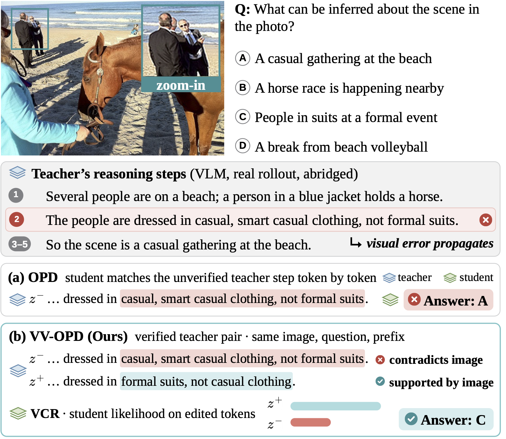
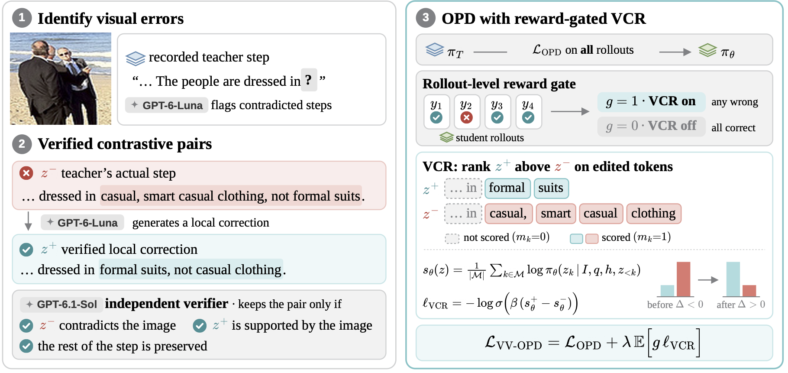
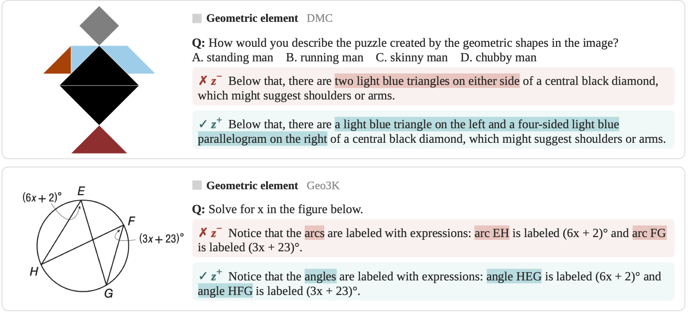
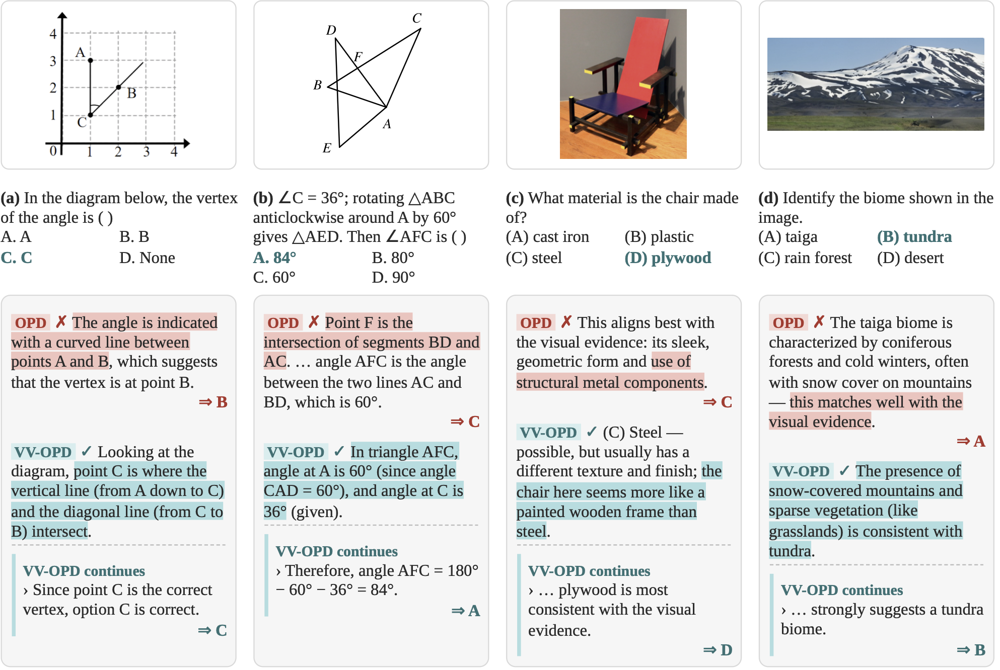

Identify visual errors
GPT-6-Luna flags recorded teacher steps whose visual claims contradict the image.
Distilling the teacher’s knowledge without inheriting its visual reasoning errors.

On-policy distillation (OPD) for vision–language reasoning can transfer a teacher’s visual errors to the student. When the teacher misidentifies an object attribute, misinterprets a spatial relation, or misreads a scene, the resulting erroneous claims can become supervision targets for the student’s intermediate reasoning steps. Existing vision-based OPD methods reweight or redirect the distillation signal toward image content, leaving individual visual claims in the teacher’s reasoning unverified. We propose Visual Verification for On-Policy Distillation (VV-OPD), which checks whether the image supports the visual claims made at each step of the teacher’s reasoning. VV-OPD uses the verification results to construct contrastive pairs that train the student policy to favor reasoning steps grounded in visual evidence. Across eight benchmarks, VV-OPD improves over OPD by 6.86 points on mathematical reasoning and 4.37 points on general multimodal reasoning, while reducing step-level visual evidence errors by 3.34 and 2.34 points, respectively.
Step-level verified contrastive pairs, edited-token ranking, and reward-gated training.

GPT-6-Luna flags recorded teacher steps whose visual claims contradict the image.
GPT-6-Luna generates minimal local corrections; GPT-6.1-Sol independently verifies the pairs.
Distill on student rollouts; for questions with a verified pair and an incorrect rollout, rank the correction above the error on edited tokens.
Real teacher visual errors are paired with minimal, independently verified, image-grounded corrections.

Improvements over standard OPD in the primary 8B→2B setting.
Where an incorrect visual observation changes the reasoning trajectory.

Use the following draft BibTeX entry for now; replace the identifier and publication details once available.
@misc{li2026vvopd,
title = {Verifying Visual Claims Step by Step for On-Policy Distillation},
author = {Li, Peizhen and Cao, Zehong and Li, Yugu and
Qiao, Jianglin and Hu, Siyi and Wu, Xiao-Ming and Zhang, Yang},
year = {2026},
note = {Preprint — update publication details when available}
}